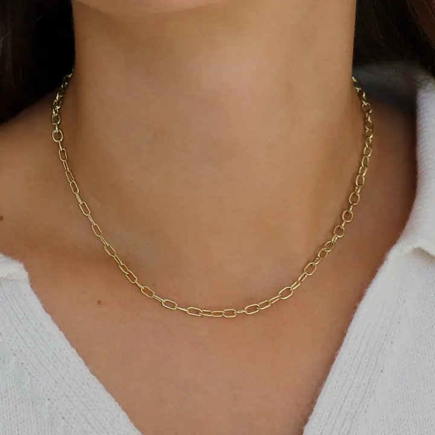

貴金屬選購與保養：金屬的日常
貴金屬的選購，先想「過敏與耐用」；保養的關鍵，是「鍍層與化學品」。

核心定義
貴金屬選購三問：① 過敏嗎？（鎳過敏者避開含鎳合金，選鉑金/純金/銀）；② 佩戴頻率？（日常選硬合金 18K/14K，收藏選純金屬）；③ 預算？（金鉑貴、銀親民）。保養守則：怕化學品（香水、泳池氯）、怕刮（分開放）、怕拉扯（鏈飾）。
鍍層保養：白 K 金的銠鍍層、銀飾的氧化——鍍層磨損需重鍍、銀黑需清潔——「白色金屬的日常」是定期維護的學問。
特徵與分類
| 金屬 | 過敏風險 | 保養重點 |
|---|---|---|
| 鉑金 | 低 | 本色白、少維護 |
| 純金/18K | 低 | 金軟防刮 |
| 白K金 | 中（鎳） | 鍍層重鍍 |
| 銀 | 低 | 防氧化變黑 |
| 鈦鋼 | 極低 | 堅固少維護 |
鎳過敏（接觸性皮膚炎）是金屬飾品最常見的過敏源——含鎳的白 K 金可能引發。對策：選鉑金、純金、銀、鈦鋼（無鎳）——「不過敏」是選金屬的第一考量。
科學原理
過敏的科學：鎳離子溶出後與皮膚蛋白結合，引發免疫反應（接觸性皮膚炎）——含鎳合金（部分白 K 金、鋼錶）是過敏主因。純金、鉑金、銀（純度夠）鎳含量極低——過敏者的安全選擇。
鍍層的科學：白 K 金鍍銠是「犧牲層」——銠磨損後露出金合金本色（微黃）——需定期重鍍（珠寶店 3-5 分鐘）。銀的硫化是化學反應——密封保存（隔絕硫化氫）是防黑的物理對策。
鑑定與鑑別方法
- 選購：問成分（含鎳與否）、看印記
- 佩戴：化妝噴香後再戴
- 清潔：軟布/專用清潔劑、避免化學品
- 存放：分格軟布包裹
- 定期：檢查爪鑲與鍍層
市場行情與保養建議
行情趨勢：金鉑銀各有市場週期——黃金避險、鉑金工業、銀雙重身分。珠寶消費：18K 是性價比主流、鉑金是高階婚戒、銀是日常設計——「按用途選金屬」是理性消費。
最終建議：貴金屬的價值在「純度＋工藝＋設計」——投資看純度（金條），佩戴看工藝與過敏安全（18K/鉑金）。買前問成分，買後勤保養。
常見誤區
過敏是「鎳」的問題，不是「金屬品質」——純金鉑銀不過敏。選對成分，就解決了過敏。
白 K 金鍍層會磨損、銀會氧化、金會刮傷——貴金屬也需要正確的日常保養。越貴，越要會養。
冷知識
白 K 金鍍的銠，是比黃金貴得多的金屬——你的白 K 金戒指，表面鍍了一層「更貴」的銀白。
金屬軟就會刮——「刮痕」是佩戴的歲月痕跡，可拋光修復。保養是延緩，不是杜絕。
反直覺觀點
鉑金本色白、不褪色——不用重鍍、少維護；白 K 金雖便宜，卻要定期重鍍。「省錢」的選擇，可能更花錢。
24K 純金不過敏但太軟——日常佩戴易變形。安全與耐用，需要 18K 的平衡。